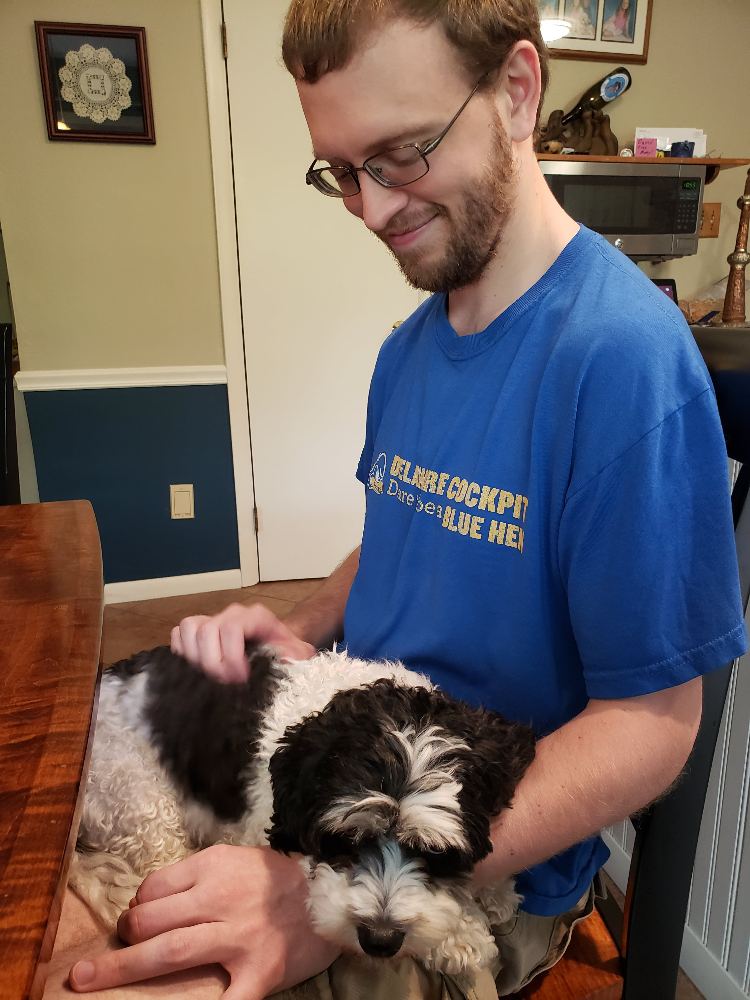

I am Mark Elrod, but if you're here, you probably already figured that out. I am a game designer with a background in UX, and have created games such as Tug and Knights of the Cupboard, the latter of which outsold 98% of the other games on The Game Crafters. I'm comfortable working in both Unreal and Unity, having taught myself the ins and outs of each engine, and I'm always picking up a new trick to try.
My passion for games and the community surrounding them led me to join the ranks of PAX's Enforcer community, helping attendees and exhibitors alike enjoy these annual conventions to their fullest. But whether I'm working at PAX, organizing a board game day, or enjoying someone else's company, I strive to provide the best experience possible for those around me.
Professionally, I've worked as a technical writer, creating instruction manuals that teach scientists how to operate the machinery used in molecular analysis. I've also worked as a shift manager at an escape room, using collected feedback on the rooms to improve their puzzles and overal game flow, so that the rooms meet corporate expectations.
Outside of games, I'm a huge foodie, and have developed a taste for trying new recipes from cultures all around the world. I also love music, having played drums of all kinds ever since elementary school. But it's not just my passions that get me out of bed in the morning; I love experiencing new things, and am always looking for a new adventure to try. So what do you say we make one?